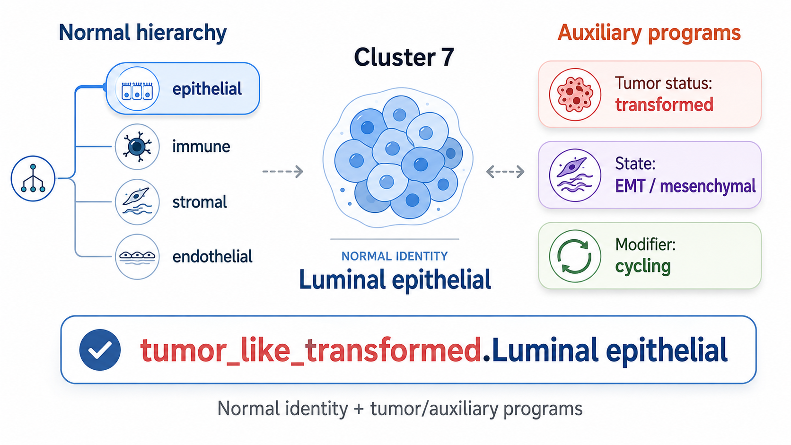
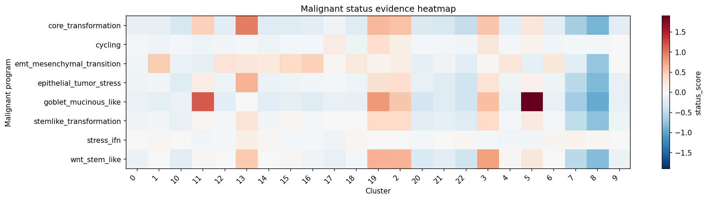
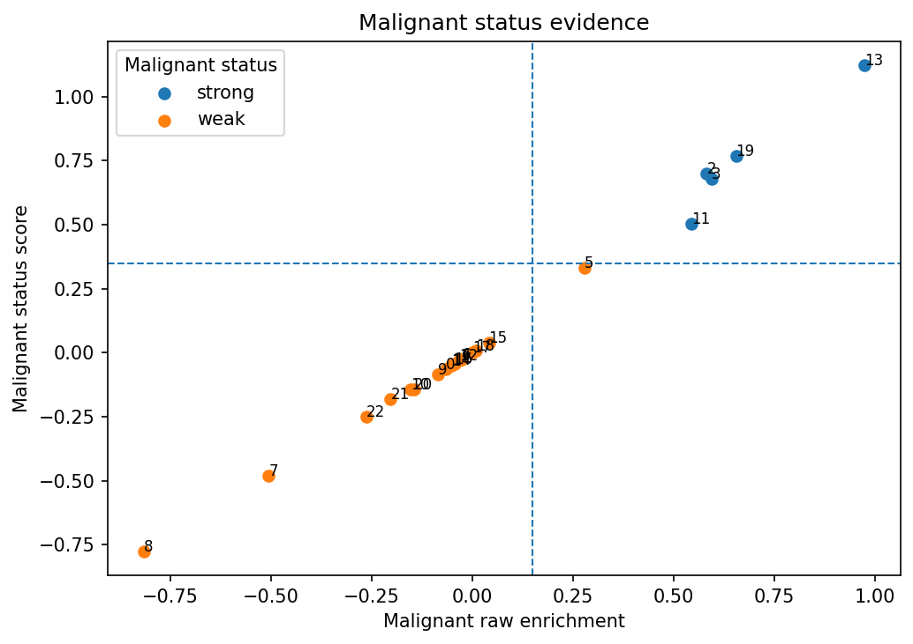
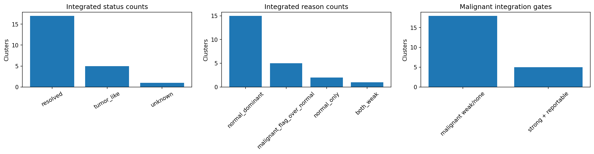
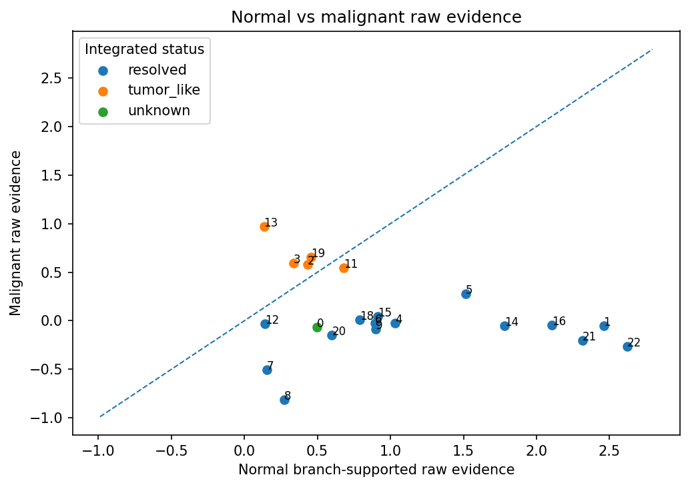
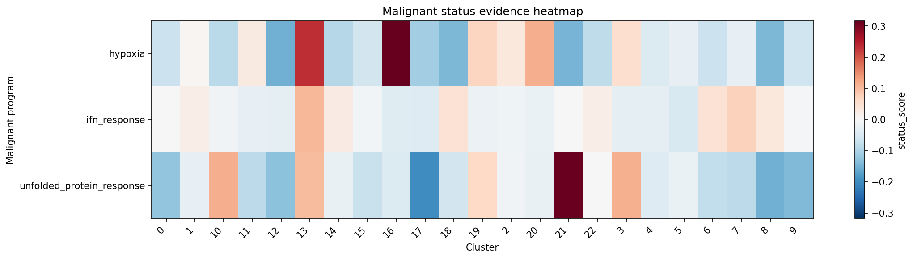

![]()
flowchart TD
A["Cluster-level expression"] --> B["Normal hierarchy track"]
A --> C["Tumor / auxiliary program track"]
B --> B1["Route normal hierarchy"]
B1 --> B2{"Normal export class"}
B2 --> N1["resolved"]
B2 --> N2["mixed_*"]
B2 --> N3["candidate_*"]
B2 --> N4["unknown"]
C --> C1["Score flat marker programs"]
C1 --> C2["Tiered reporting"]
C2 --> C3["status labels<br/>core_transformation / stemlike / stress"]
C2 --> C4["state labels<br/>emt_mesenchymal"]
C2 --> C5["modifier labels<br/>cycling / stress_ifn"]
C3 --> D{"Combined tumor-status<br/>score passes?"}
C4 --> D
C5 --> E1["Report modifiers separately"]
D -- "No" --> E2["Keep normal export label<br/>report program status separately"]
D -- "Yes" --> F{"Integration mode"}
F -- "flag_only" --> E2
F -- "integrate" --> G{"Normal export class"}
G -- "resolved" --> H["tumor_like_status_state.normal_label"]
G -- "mixed_*" --> I["keep mixed_* primary<br/>store tumor-like diagnostic"]
G -- "candidate_*" --> J["keep candidate_* primary<br/>store tumor-like diagnostic"]
G -- "unknown" --> K["tumor_like_status_state.unknown<br/>if reportable"]
E1 --> Z["Result tables and diagnostics"]
E2 --> Z
H --> Z
I --> Z
J --> Z
K --> Z
1 Introduction
The first HierAnnot post introduced a structured way to assign normal lineage or cell-type labels to clusters. That workflow starts from a tissue-appropriate marker hierarchy and asks a lineage-routing question:
Which node in our hierarchy of normal cell types best fits this cluster?
That question is essential, but it is not always enough. In tumor and disease datasets, a cluster may have a clear normal lineage identity and also show several biological programs at the same time. For example, a colon epithelial cluster can be tumor-like, stem-like, mesenchymal-shifted, cycling, and interferon-high. A fibroblast cluster can show fibrosis or wound-response programs. An immune cluster can be cytotoxic, exhausted, or IFN-high.
Those are multi-state annotation problems. They are related to cell identity, but they are not the same as lineage identity. A cluster does not need to choose between “tumor-like” and “cycling” or between “epithelial” and “IFN-high.” Multiple programs can be active together.
HierAnnot therefore separates two tasks:
- Normal hierarchy track: Assign a conservative lineage or cell-type identity.
- Tumor / auxiliary program track: Detect and report biological state programs that can coexist with the normal identity.
The tumor/auxiliary track was designed primarily for tumor-status annotation and tumor-like label integration (which integrates both lineage-based cell type annotation and descriptive tumor status annotation to final export label of a tumor-positive cluster, example shown in Table 6). The same machinery can also be used in flag_only mode for non-tumor auxiliary programs such as cell cycle, stress, inflammation, or fibrosis.
This post focuses on the tumor/auxiliary program track. I use malignant status annotation as the primary example, but the same design supports broader multi-state annotation. At the end of this workflow, HierAnnot would annotate clusters with labels that carry the auxiliary status description (Table 4) in addition to the lineage-based cell type labels (Table 3).
2 The mental model: identity first, programs second
The normal hierarchy track and tumor/auxiliary track solve different problems.
The normal hierarchy track is a tree-routing problem. As illustrated in earlier post, it aggregates evidences from multiple aspects (i.e. marker enrichment, sibling competition, marker support, and branch support) to decide how far to descend through a normal lineage hierarchy. The output is a normal identity label, with safeguards such as mixed_*, candidate_*, and unknown when the evidence is uncertain.
The tumor/auxiliary program track is a flat program-reporting problem. It scores marker programs in parallel, then reports them through a tiered interpretation layer which decides whether the cluster has sufficient evidences for tumor identity and what descriptive annotation should be assigned to an identified tumor-positive cluster.
The main intuition is:
- Normal hierarchy = “What is this cluster?”
- Tumor/auxiliary track = “What programs are active in this cluster?”
For tumor annotation, the program track uses three reporting roles:
| Role | Purpose | Example programs | Can establish tumor-like identity? |
|---|---|---|---|
status |
Provides core evidence that a cluster is tumor-like | core_transformation, stemlike_transformation, epithelial_tumor_stress |
Yes |
state |
Describes the tumor state when tumor-status evidence is present | emt_mesenchymal_transition |
Not by itself |
modifier |
Adds auxiliary context | cycling, stress_ifn |
No |
This keeps the tumor call conservative. A strong cycling or stress_ifn program can be useful to report, but it should not by itself convert a cluster into a tumor-like label. A strong tumor-status program can establish tumor-like identity; a strong state program can help name that tumor-like label or support a borderline tumor-status call. For a concrete example of a built-in tumor program track used by HierAnnot, see the example tumor_colon marker program set in Listing 1.
Why this is not another hierarchy
It may be tempting to make tumor programs another hierarchy, but that would impose the wrong structure on the biology.
In a normal hierarchy, sibling nodes are often alternative identity choices. A cluster is more likely to be a T cell or a B cell, a fibroblast or an endothelial cell, a basal epithelial cell or a luminal epithelial cell. The routing logic is designed around that assumption.
Tumor and auxiliary programs can be co-active:
core transformation + EMT/mesenchymal transition + cycling
stem-like tumor state + IFN/stress response
fibrotic program + wound responseThese combinations are often biologically meaningful rather than ambiguous. Therefore, the tumor/auxiliary track scores marker programs in parallel and reports strong positives through a tiered interpretation layer instead of routing through a tree.

3 Working principles at a glance
The flow below summarizes the two-track design and how the final export label is produced.
The most important rule is that tumor-like integration is driven by combined tumor-status evidence. State programs can support or decorate tumor-status calls, but modifier programs remain diagnostic by default.
Note 1: Under the hood: combined malignant-status scoring
The detailed cluster-level tumor/auxiliary decisions are stored in result.malignant_annotations, with one row per cluster. Program-level scores are stored in result.malignant_scores, with one row per cluster-program pair. The formulas below summarize how program-level evidence is converted into cluster-level tumor-status columns.
Similar to the scoring of normal hierarchy, HierAnnot computes a control-matched raw enrichment score for each cluster \(c\) and marker program \(p\) in auxiliary track using LogNormalized expression \(x\):
\[ R_{c,p}=\overline{x}_{\text{positive markers}(p)}-\overline{x}_{\text{matched controls}(p)}-w_{\text{neg}}\overline{x}_{\text{negative markers}(p)} \]
The raw score is then weighted by marker-detection support:
\[
A_{c,p} = R_{c,p} \cdot s_{c,p}
\] where \(s_{c,p}\) increases when more positive markers from program \(p\) are detected in cluster \(c\). In the result tables, \(R_{c,p}\) is reported as raw_score, and \(A_{c,p}\) is reported as status_score.
Programs are interpreted by role:
status programs -> establish tumor-like identity
state programs -> describe or support tumor state
modifier programs -> auxiliary context onlyThe main tumor-status evidence comes from status programs:
\[ S_{\mathrm{core},c} = \max_{p \in P_{\mathrm{status}}} A_{c,p} + \mathrm{bonus}_{\mathrm{extra\ status},c} \]
The first term captures the strongest tumor-status program. The bonus term is small and capped; it rewards additional strong status programs without requiring every tumor program to be active.
State programs contribute differently. They do not establish tumor-like identity by themselves. Instead, they can add a small support bonus only when core tumor-status evidence is already borderline:
\[ S_{\mathrm{state\ support},c}=\begin{cases} \mathrm{small\ capped\ bonus}, & \text{if core status evidence is borderline and strong state evidence is present} \\ 0, & \text{otherwise} \end{cases} \]
The final combined tumor-status score is:
\[ S_{\mathrm{combined},c} = S_{\mathrm{core},c} + S_{\mathrm{state\ support},c} \]
This is reported as:
annot_malignant_combined_status_score
annot_malignant_status_scoreA cluster can pass the tumor-status gate in two ways.
Direct core-status pass:
\[ S_{\mathrm{core},c} \ge T_{\mathrm{status}} \quad\text{and}\quad R_{\mathrm{core},c} \ge T_{\mathrm{raw}} \]
where \(T_{\mathrm{status}}\) is malignant_status_score_threshold and \(T_{\mathrm{raw}}\) is malignant_raw_score_threshold.
State-supported pass:
\[ S_{\mathrm{core},c} \approx T_{\mathrm{status}} \quad\text{and}\quad S_{\mathrm{combined},c} \ge T_{\mathrm{status}} \quad\text{with strong state evidence} \]
In words, a strong state program can help a near-threshold tumor-status call pass, but it cannot convert a cluster with no core tumor-status evidence into tumor-like.
The final pass flag is reported as:
annot_malignant_tumor_status_passIf this flag is true and the tumor program is reportable in the normal-lineage context, the cluster can receive an integrated tumor-like label when malignant_integration_mode="integrate".
4 Running pipeline with auxiliary track
Just the code
For a quick start with just the code, refer to the examples scripts under HierAnnot/examples subfolder of source code repository.
examples/basic_usage.py: normal hierarchy annotation along with optional malignant integration.examples/end_to_end_anndata.py: end-to-end workflow withAnnDataand custom embeddings.examples/plot_diagnostics_from_bundle.py: all individual diagnostic plotsexamples/tissue_type_detection.py: automatic pipeline with tissue type detection and auto-pick of normal hierarhcy and tumor program set.
4.1 Illustration dataset
To illustrate usage, this post uses a publicly available CosMx® whole-transcriptomics single-slide dataset on human colon cancer FFPE tissue that you can download from the Bruker Spatial Biology webpage. Please refer to earlier post on how to generate AnnData object from either post-analyzed Seurat object or the flat files exported by AtoMx® SIP.
For the code examples, assume we already have an AnnData object named adata. The object should contain expression data and a cluster assignment column:
import anndata as ad
# read in anndata object and get the `obs` column with clusters
adata = ad.read_h5ad("path/to/data.h5ad")
cluster_key = "cluster"
# Minimal assumed inputs:
# - adata.layers["counts"] (raw integer counts, required)
# - adata.obs["cluster"] (cluster labels)HierAnnot scores cluster-level expression profiles. We can aggregate the AnnData object to cluster means:
from hierannot import (
aggregate_anndata_to_cluster_means,
HierAnnotPipeline,
make_cluster_annotation_export_summary,
)
cluster_means = aggregate_anndata_to_cluster_means(
adata,
cluster_key=cluster_key,
source="layer",
source_key="counts",
method="mean",
uppercase_genes=True,
)
# pandas.DataFrame with gene names as row index for feature x cluster average expression profiles
cluster_means.head()4.2 Setup hierarchy and auxiliary marker program set
HierAnnot provides several built-in marker-program sets for tumor-status annotation and auxiliary program scoring. These include broad solid-tumor programs, tissue-context tumor programs, and non-tumor auxiliary program sets for flag_only workflows. You can inspect the available sets and their recommended usage metadata with list_builtin_marker_program_sets():
from hierannot import list_builtin_marker_program_sets
program_sets = list_builtin_marker_program_sets()
print(program_sets)list_builtin_marker_program_sets().
| name | program_family | tissue_scope | recommended_hierarchy | recommended_integration_mode | recommended_report_block_preset | description | n_programs | n_status_programs | n_state_programs | n_modifier_programs |
|---|---|---|---|---|---|---|---|---|---|---|
| tumor_general | tumor | pan-solid-tumor | integrate | tumor_reportable | Shared solid-tumor status, state, and modifier programs. Status programs establish tumor-like support; state/modifier programs add context. | 6 | 3 | 1 | 2 | |
| tumor_breast | tumor | breast | breast_tme | integrate | tumor_reportable | Breast-focused tumor-state marker programs, plus tumor_general by default. | 2 | 0 | 2 | 0 |
| tumor_colon | tumor | colon | colon_tme | integrate | tumor_reportable | Colon-focused tumor-state marker programs, plus tumor_general by default. | 2 | 0 | 2 | 0 |
| tumor_skin | tumor | skin | skin_tme | integrate | tumor_reportable | Skin-focused tumor-state programs: reusable squamous states plus melanocytic state descriptors, with tumor_general added by default. | 4 | 0 | 4 | 0 |
| tumor_squamous | tumor | squamous | skin_tme or tonsil_tme | integrate | tumor_reportable | Reusable squamous tumor-state programs. These decorate solid-tumor calls after squamous lineage is established by the normal hierarchy. | 3 | 0 | 3 | 0 |
| tumor_tonsil | tumor | tonsil/oropharyngeal squamous | tonsil_tme | integrate | tumor_reportable | Tonsil/oropharynx squamous tumor-state programs, plus tumor_general by default. | 3 | 0 | 3 | 0 |
| fibrosis | fibrosis | stromal | flag_only | lineage_aware | Fibrosis and stromal remodeling auxiliary programs. | 3 | 0 | 0 | 3 | |
| immune_lymphoid_states | immune_state | lymphoid/lymphoma-context | immune_core or tme_core | flag_only | lineage_aware | Lymphoid immune subtype/state programs for lymphoma-context flag-only annotation. These do not establish malignant status by themselves. | 8 | 0 | 6 | 2 |
| cell_cycle | cell_cycle | pan-tissue | flag_only | off | Cell-cycle/proliferation auxiliary programs for flag-only scoring. | 3 | 0 | 0 | 3 | |
| inflammation | inflammation | pan-tissue | flag_only | off | Inflammatory and antigen-presentation auxiliary programs for flag-only scoring. | 2 | 0 | 0 | 2 | |
| stress | stress | pan-tissue | flag_only | off | Stress, hypoxia, interferon, and UPR auxiliary programs for flag-only scoring. | 3 | 0 | 0 | 3 |
Each built-in marker program set is designed for different annotation purpose and HierAnnot allows you to pick one marker program set at a time. For the colon cancer example dataset here, we will use a colon tissue microenvironment hierarchy colon_tme and a colon-specific tumor program set tumor_colon. Please refer to package README on how to customize the marker program set (i.e. a custom list of MalignantProgram objects) for auxiliary track annotation.
from hierannot import get_builtin_hierarchy, get_builtin_marker_program_set
# normal hierarchy
root_programs = get_builtin_hierarchy("colon_tme")
# tumor program set, use `tumor_general` for generic solid-tumor programs shared across tissue types
tumor_programs = get_builtin_marker_program_set("tumor_colon")You can visualize the structure and content of those programs using helper functions:
Code
from hierannot import (
format_hierarchy_tree, format_marker_program_set,
summarize_marker_program_set
)
# visualize the chosen hierarchy as a tree
print(format_hierarchy_tree(root_programs))
# visualize the tumor program set
print(format_marker_program_set(tumor_programs, title="tumor_colon"))
# get summary info for tumor program set
program_summary = summarize_marker_program_set(tumor_programs)
print(program_summary[[
"name",
"reporting_role",
"competition_group",
"n_positive_markers",
"description",
]])tumor_colon marker program set
| name | reporting_role | competition_group | n_positive_markers | description |
|---|---|---|---|---|
| core_transformation | status | core_transformation | 9 | Core epithelial transformation status module. This avoids using broad epithelial lineage markers as the main tumor-status evidence. |
| stemlike_transformation | status | stemlike_transformation | 10 | Stem-like transformation status module used as additional tumor-status evidence in epithelial/parenchymal contexts. |
| epithelial_tumor_stress | status | tumor_epithelial_stress | 10 | Epithelial tumor/stress status module that supports tumor-like detection when core transformation markers are borderline. |
| goblet_mucinous_like | state | colon_subtype | 5 | Colon tumor goblet/mucinous-like state descriptor. |
| wnt_stem_like | state | colon_subtype | 5 | Colon tumor WNT/stem-like state descriptor. |
| emt_mesenchymal_transition | state | emt_mesenchymal | 14 | EMT/mesenchymal-transition tumor state module. |
| cycling | modifier | proliferation | 6 | Cycling/proliferative tumor-associated modifier. It is reported as context and does not establish tumor-like status by itself. |
| stress_ifn | modifier | stress_ifn | 6 | Interferon/stress-associated tumor modifier. It is reported as context and does not establish tumor-like status by itself. |
Formatted text returned by format_marker_program_set() for built-in tumor_colon marker set.
tumor_colon: 8 programs
[status]
competition_group: core_transformation
- core_transformation (label=transformed; +9, -1)
+ markers: SOX9, KRT17, TACSTD2, CLDN4, MSLN, S100A14, LCN2, CEACAM5, ... (+1 more)
report_on_lineages: Epithelial, ... (+40 more)
competition_group: stemlike_transformation
- stemlike_transformation (label=stemlike; +10, -1)
+ markers: PROM1, LGR5, ASCL2, OLFM4, SOX9, CD44, ALCAM, MSI1, ... (+2 more)
report_on_lineages: Epithelial, ... (+40 more)
competition_group: tumor_epithelial_stress
- epithelial_tumor_stress (label=tumor_stress; +10, -1)
+ markers: KRT17, KRT6A, KRT6B, LCN2, S100A8, S100A9, SERPINB3, SERPINB4, ... (+2 more)
report_on_lineages: Epithelial, ... (+40 more)
[state]
competition_group: colon_subtype
- goblet_mucinous_like (label=goblet_mucinous_like; +5, -1)
+ markers: MUC2, SPINK4, TFF3, AGR2, CLCA1
report_on_lineages: Epithelial, ... (+40 more)
- wnt_stem_like (label=wnt_stem_like; +5, -1)
+ markers: LGR5, ASCL2, SOX9, AXIN2, MYC
report_on_lineages: Epithelial, ... (+40 more)
competition_group: emt_mesenchymal
- emt_mesenchymal_transition (label=emt_mesenchymal; +14, -1)
+ markers: VIM, FN1, ITGA5, ITGB1, ITGA6, ZEB1, ZEB2, SNAI1, ... (+6 more)
report_on_lineages: Epithelial, ... (+40 more)
[modifier]
competition_group: proliferation
- cycling (label=cycling; +6, -0)
+ markers: MKI67, TOP2A, UBE2C, PCNA, TYMS, BIRC5
report_on_lineages: Epithelial, ... (+40 more)
competition_group: stress_ifn
- stress_ifn (label=stress_ifn; +6, -0)
+ markers: STAT1, ISG15, IFIT1, IFIT3, MX1, OAS1
report_on_lineages: Epithelial ... (+40 more)Formatted tree returned by format_hierarchy_tree() for built-in colon_tme hierarchy.
- Intestinal epithelial (+6, -4, children=3)
- Absorptive-like (+5, -1, children=0)
- Goblet-like (+5, -1, children=0)
- Stem/TA-like (+5, -1, children=0)
- Fibroblast (+5, -4, children=0)
- Endothelial (+5, -3, children=1)
- Capillary endothelial (+5, -2, children=0)
- Mural (+5, -2, children=1)
- Pericyte (+5, -6, children=0)
- Immune (+5, -2, children=6)
- T cell (+5, -2, children=3)
- CD4 T cell (+5, -2, children=0)
- CD8 T cell (+5, -1, children=0)
- Treg (+5, -2, children=0)
- B cell (+5, -2, children=1)
- Plasma cell (+5, -2, children=0)
- NK cell (+5, -2, children=0)
- Myeloid (+5, -2, children=3)
- Macrophage (+5, -2, children=0)
- Monocyte (+5, -2, children=0)
- Dendritic cell (+5, -2, children=0)
- Mast cell (+5, -2, children=0)
- Neutrophil (+5, -2, children=0)Within the built-in tumor_* program sets, core_transformation is the main generic tumor-status module, which captures compact expression evidence for a transformed, tumor-like epithelial state that can be evaluated across solid-tumor data sets. HierAnnot treats this as tumor-status evidence: if the program is sufficiently enriched and supported by detected markers, it can contribute to a tumor-like call. More specific programs, such as EMT, cycling, stress, or tissue-specific melanocytic programs, are then used as state or modifier evidence which do not establish tumor-like identity by themselves but add a small support bonus only when core tumor-status evidence is already borderline. See details on program roles and tumor-status scoring in Note 1 above.
4.3 Choose how auxiliary-track labels interact with final labels
HierAnnot provides different modes for controlling how auxiliary-track labels interact with the final exported annotation. These modes are not sequential optimization steps; they are alternative workflows for different analysis goals.
The main control is malignant_integration_mode:
| Mode | Best for | Export label behavior |
|---|---|---|
off |
Standard normal hierarchy annotation without the auxiliary program track | Export labels are normal-hierarchy labels only; tumor/auxiliary programs are not scored |
flag_only |
Reviewing tumor/auxiliary program activity without changing normal labels; non-tumor auxiliary tracks | Normal hierarchy label remains primary; program calls are reported separately |
integrate |
Tumor-focused workflows where strong tumor-status evidence should appear in the final label | Strong, reportable tumor-status calls can produce tumor_like_* labels |
A second control is program_report_block_preset, which controls where tumor-like labels are allowed to be reported after normal hierarchy routing. In this post, we use the recommended solid-tumor default:
program_report_block_preset="tumor_reportable"This preset allows reporting in curated tumor-reportable built-in lineages while guarding against common false positives in immune, stromal, endothelial, and mural compartments. For custom hierarchies or specialized workflows, use an exact block list or "lineage_aware" program metadata. For the complete option reference for integration modes, report-block presets, lineage-aware metadata, and export behavior, refer to the package README.
The two sections below demonstrate the two most common workflows.
4.4 Workflow A: flag-only multi-state annotation
In flag_only mode, the normal hierarchy still produces the export label. The tumor/auxiliary program track is scored and reported separately in result.malignant_annotations.
This mode is useful when the program track is a secondary layer of interpretation:
Which clusters show tumor-status, state, or modifier evidence?
without changing the final cell-type labels.
pipeline_flag = HierAnnotPipeline(
root_programs=root_programs,
malignant_programs=tumor_programs,
malignant_integration_mode="flag_only",
program_report_block_preset="tumor_reportable",
)
result_flag = pipeline_flag.fit_score(cluster_means)The normal hierarchy annotations are stored in result.cluster_annotations.
Code
hiera_cols = [
"cluster_id",
"annot_label",
"annot_path",
"annot_level",
"annot_status",
"annot_confidence",
"annot_branch_supported_raw_score",
"annot_final_call_margin"
]
result_flag.cluster_annotations[hiera_cols]The tumor/auxiliary program summary is stored in result.malignant_annotations.
Code
malig_cols = [
"cluster_id",
"annot_malignant_status",
"annot_malignant_label_concise",
"annot_malignant_status_label",
"annot_malignant_state_label",
"annot_malignant_modifier_labels",
"annot_malignant_tumor_status_pass",
"annot_malignant_raw_score",
"annot_malignant_status_score",
"annot_malignant_status_decision_source",
]
result_flag.malignant_annotations[malig_cols]
## To inspect all strong programs for a given cluster in one field
result_flag.malignant_annotations[["cluster_id", "annot_malignant_strong_programs"]]
## To inspect tumor-like clusters only
result_flag.malignant_annotations.loc[
result_flag.malignant_annotations["annot_malignant_tumor_status_pass"],
malig_cols,
]
## To inspect clusters where state support helped a borderline tumor-status call pass
result_flag.malignant_annotations.loc[
result_flag.malignant_annotations["annot_malignant_status_decision_source"]
== "status_core_plus_state_support",
malig_cols,
]Although the current result table uses malignant_* column names, it is best to think of this table as the summary of the flat tumor/auxiliary program track.
Important columns include:
| Column | Meaning |
|---|---|
annot_malignant_status |
Overall strong/weak/none status for the tumor/auxiliary track |
annot_malignant_tumor_status_pass |
Whether combined tumor-status evidence passed the tumor-like gate |
annot_malignant_status_label |
Primary status label, such as transformed |
annot_malignant_state_label |
Selected state label, such as emt_mesenchymal |
annot_malignant_modifier_labels |
Modifier labels, such as cycling or stress_ifn |
annot_malignant_label_concise |
Compact label used if tumor-like integration is enabled |
annot_malignant_status_score |
Combined tumor-status score |
annot_malignant_raw_score |
Core status raw evidence |
annot_malignant_status_decision_source |
Whether the call came from core status alone or core status plus state support |
This table is intentionally richer than a single label. Multi-state annotation should preserve the distinction between status, state, and modifier programs.
In flag_only mode, tumor/auxiliary programs do not change the final export label.
export_flag = make_cluster_annotation_export_summary(result_flag)Code
expr_cols = [
"cluster_id",
# final export label
"annot_export_label",
"annot_export_status",
# normal hierarchy outcomes
"annot_label",
"annot_confidence",
# malignant flagging outcomes
"annot_malignant_status",
"annot_malignant_label_concise",
"annot_export_malignant_flag"
]
export_flag[expr_cols]The export label remains normal-hierarchy based. The tumor/auxiliary status can be used as an additional metadata field.
cluster_annotations results.
| cluster_id | annot_label | annot_path | annot_level | annot_status | annot_confidence | annot_branch_supported_raw_score | annot_final_call_margin |
|---|---|---|---|---|---|---|---|
| 15 | Pericyte | Mural > Pericyte | 2 | assigned | high | 0.9137479 | 0.4574219 |
| 0 | Fibroblast | Fibroblast | 1 | assigned | medium | 0.4967125 | -0.0869893 |
| 4 | Pericyte | Mural > Pericyte | 2 | assigned | high | 1.0323811 | 0.8994070 |
| 7 | Neutrophil | Immune > Neutrophil | 2 | assigned | high | 0.1539260 | -1.2210864 |
| 14 | Fibroblast | Fibroblast | 1 | assigned | high | 1.7800327 | 0.3375781 |
| 8 | Treg | Immune > T cell > Treg | 3 | assigned | high | 0.2733847 | 1.6741942 |
| 12 | Capillary endothelial | Endothelial > Capillary endothelial | 2 | assigned | high | 0.1394757 | 0.4791046 |
| 18 | Pericyte | Mural > Pericyte | 2 | assigned | high | 0.7907540 | 0.1775122 |
| 6 | Pericyte | Mural > Pericyte | 2 | assigned | high | 0.8920664 | 0.6298190 |
| 10 | Unresolved | Unresolved | 0 | stopped_at_parent | none | NA | NA |
| 2 | Stem/TA-like | Intestinal epithelial > Stem/TA-like | 2 | assigned | high | 0.4309357 | 2.3992049 |
| 19 | Stem/TA-like | Intestinal epithelial > Stem/TA-like | 2 | assigned | high | 0.4559314 | 1.2179506 |
| 3 | Stem/TA-like | Intestinal epithelial > Stem/TA-like | 2 | assigned | high | 0.3351936 | 0.9490338 |
| 16 | Fibroblast | Fibroblast | 1 | assigned | high | 2.1059796 | 1.5885825 |
| 22 | Mast cell | Immune > Mast cell | 2 | assigned | high | 2.6218248 | 10.0048250 |
| 13 | Absorptive-like | Intestinal epithelial > Absorptive-like | 2 | assigned | high | 0.1341072 | 1.2709330 |
| 1 | Fibroblast | Fibroblast | 1 | assigned | high | 2.4592083 | 1.9186232 |
| 17 | Unresolved | Unresolved | 0 | stopped_at_parent | none | NA | NA |
| 21 | Plasma cell | Immune > B cell > Plasma cell | 3 | assigned | high | 2.3151134 | 5.1291646 |
| 9 | Fibroblast | Fibroblast | 1 | assigned | high | 0.9003778 | 0.4141886 |
| 11 | Absorptive-like | Intestinal epithelial > Absorptive-like | 2 | assigned | high | 0.6812847 | 1.1710310 |
| 5 | Goblet-like | Intestinal epithelial > Goblet-like | 2 | assigned | high | 1.5152592 | 6.1732956 |
| 20 | Neutrophil | Immune > Neutrophil | 2 | assigned | high | 0.5986723 | 5.5202015 |
malignant_annotations results.
| cluster_id | annot_malignant_status | annot_malignant_label_concise | annot_malignant_status_label | annot_malignant_state_label | annot_malignant_modifier_labels | annot_malignant_tumor_status_pass | annot_malignant_raw_score | annot_malignant_status_score | annot_malignant_status_decision_source |
|---|---|---|---|---|---|---|---|---|---|
| 15 | weak | emt_mesenchymal | emt_mesenchymal | NA | False | 0.0409949 | 0.0389451 | no_status_evidence | |
| 0 | weak | stress_ifn | NA | False | -0.0654694 | -0.0654694 | no_status_evidence | ||
| 4 | weak | emt_mesenchymal | NA | False | -0.0274896 | -0.0261151 | no_status_evidence | ||
| 7 | weak | stress_ifn | NA | False | -0.5051925 | -0.4799328 | no_status_evidence | ||
| 14 | weak | emt_mesenchymal | NA | False | -0.0492046 | -0.0467443 | no_status_evidence | ||
| 8 | weak | stress_ifn | NA | False | -0.8161420 | -0.7753349 | no_status_evidence | ||
| 12 | weak | emt_mesenchymal | NA | False | -0.0319754 | -0.0303766 | no_status_evidence | ||
| 18 | weak | emt_mesenchymal | NA | False | 0.0087171 | 0.0082812 | no_status_evidence | ||
| 6 | weak | emt_mesenchymal | NA | False | -0.0270342 | -0.0256825 | no_status_evidence | ||
| 10 | weak | stress_ifn | NA | False | -0.1527602 | -0.1451222 | no_status_evidence | ||
| 2 | strong | transformed_goblet_mucinous_like | transformed | goblet_mucinous_like | NA | True | 0.5821276 | 0.6997872 | status_core |
| 19 | strong | transformed_goblet_mucinous_like | transformed | goblet_mucinous_like | NA | True | 0.6546867 | 0.7683152 | status_core |
| 3 | strong | transformed_goblet_mucinous_like | transformed | goblet_mucinous_like | NA | True | 0.5938934 | 0.6779053 | status_core |
| 16 | weak | emt_mesenchymal | emt_mesenchymal | NA | False | -0.0444082 | -0.0421878 | no_status_evidence | |
| 22 | weak | stress_ifn | NA | False | -0.2632725 | -0.2501089 | no_status_evidence | ||
| 13 | strong | transformed_wnt_stem_like | transformed | wnt_stem_like | NA | True | 0.9729888 | 1.1229888 | status_core |
| 1 | weak | emt_mesenchymal | emt_mesenchymal | NA | False | -0.0526289 | -0.0499975 | no_status_evidence | |
| 17 | weak | cycling | NA | False | -0.0001114 | -0.0001002 | no_status_evidence | ||
| 21 | weak | stress_ifn | NA | False | -0.2025665 | -0.1823099 | no_status_evidence | ||
| 9 | weak | stress_ifn | NA | False | -0.0862266 | -0.0862266 | no_status_evidence | ||
| 11 | strong | transformed_goblet_mucinous_like | transformed | goblet_mucinous_like | NA | True | 0.5433234 | 0.5027695 | status_core |
| 5 | weak | goblet_mucinous_like | goblet_mucinous_like | NA | False | 0.2783830 | 0.3319858 | no_status_evidence | |
| 20 | weak | stress_ifn | NA | False | -0.1445616 | -0.1445616 | no_status_evidence |
flag_only mode.
| cluster_id | annot_export_label | annot_export_status | annot_label | annot_confidence | annot_malignant_status | annot_malignant_label_concise | annot_export_malignant_flag |
|---|---|---|---|---|---|---|---|
| 15 | Pericyte | resolved | Pericyte | high | weak | emt_mesenchymal | False |
| 0 | Fibroblast | resolved | Fibroblast | medium | weak | stress_ifn | False |
| 4 | Pericyte | resolved | Pericyte | high | weak | emt_mesenchymal | False |
| 7 | mixed_neutrophil.macrophage | mixed | Neutrophil | high | weak | stress_ifn | False |
| 14 | Fibroblast | resolved | Fibroblast | high | weak | emt_mesenchymal | False |
| 8 | Treg | resolved | Treg | high | weak | stress_ifn | False |
| 12 | Capillary endothelial | resolved | Capillary endothelial | high | weak | emt_mesenchymal | False |
| 18 | Pericyte | resolved | Pericyte | high | weak | emt_mesenchymal | False |
| 6 | Pericyte | resolved | Pericyte | high | weak | emt_mesenchymal | False |
| 10 | candidate_plasma_cell | candidate | Unresolved | none | weak | stress_ifn | False |
| 2 | Stem/TA-like | resolved | Stem/TA-like | high | strong | transformed_goblet_mucinous_like | True |
| 19 | Stem/TA-like | resolved | Stem/TA-like | high | strong | transformed_goblet_mucinous_like | True |
| 3 | Stem/TA-like | resolved | Stem/TA-like | high | strong | transformed_goblet_mucinous_like | True |
| 16 | Fibroblast | resolved | Fibroblast | high | weak | emt_mesenchymal | False |
| 22 | Mast cell | resolved | Mast cell | high | weak | stress_ifn | False |
| 13 | Absorptive-like | resolved | Absorptive-like | high | strong | transformed_wnt_stem_like | True |
| 1 | Fibroblast | resolved | Fibroblast | high | weak | emt_mesenchymal | False |
| 17 | unknown | unknown | Unresolved | none | weak | cycling | False |
| 21 | Plasma cell | resolved | Plasma cell | high | weak | stress_ifn | False |
| 9 | Fibroblast | resolved | Fibroblast | high | weak | stress_ifn | False |
| 11 | Absorptive-like | resolved | Absorptive-like | high | strong | transformed_goblet_mucinous_like | True |
| 5 | Goblet-like | resolved | Goblet-like | high | weak | goblet_mucinous_like | False |
| 20 | Neutrophil | resolved | Neutrophil | high | weak | stress_ifn | False |
4.5 Workflow B: integrated tumor annotation
Integrated mode combines annotations from both tracks into integrated labels. Use it when the desired final label should explicitly include strong reportable tumor-like status.
pipeline_integrated = HierAnnotPipeline(
root_programs=root_programs,
malignant_programs=tumor_programs,
malignant_integration_mode="integrate",
program_report_block_preset="tumor_reportable",
)
result_integrated = pipeline_integrated.fit_score(cluster_means)The integrated annotation table, result.integrated_annotations, combines normal identity with tumor-status interpretation.
Code
integrated_cols = [
"cluster_id",
"annot_integrated_label",
"annot_integrated_status",
"annot_integrated_reason",
"annot_label",
"annot_malignant_status",
"annot_malignant_label_concise",
"annot_malignant_tumor_status_pass",
"annot_malignant_reporting_blocked",
"annot_malignant_status_score",
"annot_malignant_raw_score",
]
result_integrated.integrated_annotations[integrated_cols]
## To inspect clusters whose reporting was blocked by lineage/reporting rules
result_integrated.integrated_annotations.loc[
result_integrated.integrated_annotations["annot_malignant_reporting_blocked"],
integrated_cols,
]Resolved normal labels with strong reportable tumor-status evidence can become integrated labels such as:
tumor_like_transformed.Intestinal epithelial
tumor_like_transformed_emt_mesenchymal.Absorptive-likeNormal-track safeguards are still respected in the export stage. For example, mixed_* or candidate_* labels can remain primary when they carry important normal-hierarchy uncertainty.
The export summary gives a concise table that can be joined back to adata.obs.
export_integrated = make_cluster_annotation_export_summary(result_integrated)Code
expr_cols2 = [
"cluster_id",
# final export label
"annot_export_label",
"annot_export_status",
# normal hierarchy outcomes
"annot_label",
"annot_confidence",
# malignant flagging outcomes
"annot_malignant_status",
"annot_malignant_label_concise",
"annot_export_malignant_flag",
# integrated label before applying other export rules
"annot_integrated_label",
"annot_integrated_status",
]
export_integrated[expr_cols2]Attach the final export label back to the original AnnData object:
final_col = "annot_export_label" # or "annot_export_label_with_cluster"
label_map = export_integrated.set_index("cluster_id")[final_col]
adata.obs["hierannot_label"] = (
adata.obs[cluster_key]
.astype(label_map.index.dtype)
.map(label_map)
.fillna("unassigned")
)
# attach the tumor-like flag separately
tumor_flag_map = export_integrated.set_index("cluster_id")["annot_export_malignant_flag"]
adata.obs["hierannot_tumor_like"] = (
adata.obs[cluster_key]
.astype(tumor_flag_map.index.dtype)
.map(tumor_flag_map)
.fillna(False)
)
Export precedence with mixed, candidate, and unknown normal labels
In integration mode, the tumor/auxiliary track does not simply overwrite every normal hierarchy label.
The default export behavior is:
resolved normal label + reportable tumor-like evidence
-> use integrated tumor_like_* label
mixed_* normal label + reportable tumor-like evidence
-> keep mixed_* label as primary
-> store tumor-like label as diagnostic
candidate_* normal label + reportable tumor-like evidence
-> keep candidate_* label as primary
-> store tumor-like label as diagnostic
unknown normal label + reportable tumor-like evidence
-> use tumor_like_*.unknown if tumor status is reportableThis is designed for sparse spatial data, where normal hierarchy safeguards such as mixed labels and candidate rescue often carry useful information.
integrated_annotations results.
| cluster_id | annot_integrated_label | annot_integrated_status | annot_integrated_reason | annot_label | annot_malignant_status | annot_malignant_label_concise | annot_malignant_tumor_status_pass | annot_malignant_reporting_blocked | annot_malignant_status_score | annot_malignant_raw_score |
|---|---|---|---|---|---|---|---|---|---|---|
| 15 | Pericyte | resolved | normal_dominant | Pericyte | weak | emt_mesenchymal | False | False | 0.0389451 | 0.0409949 |
| 0 | unknown | unknown | both_weak | Fibroblast | weak | stress_ifn | False | False | -0.0654694 | -0.0654694 |
| 4 | Pericyte | resolved | normal_dominant | Pericyte | weak | emt_mesenchymal | False | False | -0.0261151 | -0.0274896 |
| 7 | Neutrophil | resolved | normal_dominant | Neutrophil | weak | stress_ifn | False | False | -0.4799328 | -0.5051925 |
| 14 | Fibroblast | resolved | normal_dominant | Fibroblast | weak | emt_mesenchymal | False | False | -0.0467443 | -0.0492046 |
| 8 | Treg | resolved | normal_dominant | Treg | weak | stress_ifn | False | False | -0.7753349 | -0.8161420 |
| 12 | Capillary endothelial | resolved | normal_dominant | Capillary endothelial | weak | emt_mesenchymal | False | False | -0.0303766 | -0.0319754 |
| 18 | Pericyte | resolved | normal_dominant | Pericyte | weak | emt_mesenchymal | False | False | 0.0082812 | 0.0087171 |
| 6 | Pericyte | resolved | normal_dominant | Pericyte | weak | emt_mesenchymal | False | False | -0.0256825 | -0.0270342 |
| 10 | Unresolved | resolved | normal_only | Unresolved | weak | stress_ifn | False | False | -0.1451222 | -0.1527602 |
| 2 | tumor_like_transformed_goblet_mucinous_like.Stem/TA-like | tumor_like | malignant_flag_over_normal | Stem/TA-like | strong | transformed_goblet_mucinous_like | True | False | 0.6997872 | 0.5821276 |
| 19 | tumor_like_transformed_goblet_mucinous_like.Stem/TA-like | tumor_like | malignant_flag_over_normal | Stem/TA-like | strong | transformed_goblet_mucinous_like | True | False | 0.7683152 | 0.6546867 |
| 3 | tumor_like_transformed_goblet_mucinous_like.Stem/TA-like | tumor_like | malignant_flag_over_normal | Stem/TA-like | strong | transformed_goblet_mucinous_like | True | False | 0.6779053 | 0.5938934 |
| 16 | Fibroblast | resolved | normal_dominant | Fibroblast | weak | emt_mesenchymal | False | False | -0.0421878 | -0.0444082 |
| 22 | Mast cell | resolved | normal_dominant | Mast cell | weak | stress_ifn | False | False | -0.2501089 | -0.2632725 |
| 13 | tumor_like_transformed_wnt_stem_like.Absorptive-like | tumor_like | malignant_flag_over_normal | Absorptive-like | strong | transformed_wnt_stem_like | True | False | 1.1229888 | 0.9729888 |
| 1 | Fibroblast | resolved | normal_dominant | Fibroblast | weak | emt_mesenchymal | False | False | -0.0499975 | -0.0526289 |
| 17 | Unresolved | resolved | normal_only | Unresolved | weak | cycling | False | False | -0.0001002 | -0.0001114 |
| 21 | Plasma cell | resolved | normal_dominant | Plasma cell | weak | stress_ifn | False | False | -0.1823099 | -0.2025665 |
| 9 | Fibroblast | resolved | normal_dominant | Fibroblast | weak | stress_ifn | False | False | -0.0862266 | -0.0862266 |
| 11 | tumor_like_transformed_goblet_mucinous_like.Absorptive-like | tumor_like | malignant_flag_over_normal | Absorptive-like | strong | transformed_goblet_mucinous_like | True | False | 0.5027695 | 0.5433234 |
| 5 | Goblet-like | resolved | normal_dominant | Goblet-like | weak | goblet_mucinous_like | False | False | 0.3319858 | 0.2783830 |
| 20 | Neutrophil | resolved | normal_dominant | Neutrophil | weak | stress_ifn | False | False | -0.1445616 | -0.1445616 |
integrate mode.
| cluster_id | annot_export_label | annot_export_status | annot_label | annot_confidence | annot_malignant_status | annot_malignant_label_concise | annot_export_malignant_flag | annot_integrated_label | annot_integrated_status |
|---|---|---|---|---|---|---|---|---|---|
| 15 | Pericyte | resolved | Pericyte | high | weak | emt_mesenchymal | False | Pericyte | resolved |
| 0 | Fibroblast | resolved | Fibroblast | medium | weak | stress_ifn | False | unknown | unknown |
| 4 | Pericyte | resolved | Pericyte | high | weak | emt_mesenchymal | False | Pericyte | resolved |
| 7 | mixed_neutrophil.macrophage | mixed | Neutrophil | high | weak | stress_ifn | False | Neutrophil | resolved |
| 14 | Fibroblast | resolved | Fibroblast | high | weak | emt_mesenchymal | False | Fibroblast | resolved |
| 8 | Treg | resolved | Treg | high | weak | stress_ifn | False | Treg | resolved |
| 12 | Capillary endothelial | resolved | Capillary endothelial | high | weak | emt_mesenchymal | False | Capillary endothelial | resolved |
| 18 | Pericyte | resolved | Pericyte | high | weak | emt_mesenchymal | False | Pericyte | resolved |
| 6 | Pericyte | resolved | Pericyte | high | weak | emt_mesenchymal | False | Pericyte | resolved |
| 10 | candidate_plasma_cell | candidate | Unresolved | none | weak | stress_ifn | False | Unresolved | resolved |
| 2 | tumor_like_transformed_goblet_mucinous_like.Stem/TA-like | tumor_like | Stem/TA-like | high | strong | transformed_goblet_mucinous_like | True | tumor_like_transformed_goblet_mucinous_like.Stem/TA-like | tumor_like |
| 19 | tumor_like_transformed_goblet_mucinous_like.Stem/TA-like | tumor_like | Stem/TA-like | high | strong | transformed_goblet_mucinous_like | True | tumor_like_transformed_goblet_mucinous_like.Stem/TA-like | tumor_like |
| 3 | tumor_like_transformed_goblet_mucinous_like.Stem/TA-like | tumor_like | Stem/TA-like | high | strong | transformed_goblet_mucinous_like | True | tumor_like_transformed_goblet_mucinous_like.Stem/TA-like | tumor_like |
| 16 | Fibroblast | resolved | Fibroblast | high | weak | emt_mesenchymal | False | Fibroblast | resolved |
| 22 | Mast cell | resolved | Mast cell | high | weak | stress_ifn | False | Mast cell | resolved |
| 13 | tumor_like_transformed_wnt_stem_like.Absorptive-like | tumor_like | Absorptive-like | high | strong | transformed_wnt_stem_like | True | tumor_like_transformed_wnt_stem_like.Absorptive-like | tumor_like |
| 1 | Fibroblast | resolved | Fibroblast | high | weak | emt_mesenchymal | False | Fibroblast | resolved |
| 17 | unknown | unknown | Unresolved | none | weak | cycling | False | Unresolved | resolved |
| 21 | Plasma cell | resolved | Plasma cell | high | weak | stress_ifn | False | Plasma cell | resolved |
| 9 | Fibroblast | resolved | Fibroblast | high | weak | stress_ifn | False | Fibroblast | resolved |
| 11 | tumor_like_transformed_goblet_mucinous_like.Absorptive-like | tumor_like | Absorptive-like | high | strong | transformed_goblet_mucinous_like | True | tumor_like_transformed_goblet_mucinous_like.Absorptive-like | tumor_like |
| 5 | Goblet-like | resolved | Goblet-like | high | weak | goblet_mucinous_like | False | Goblet-like | resolved |
| 20 | Neutrophil | resolved | Neutrophil | high | weak | stress_ifn | False | Neutrophil | resolved |
4.5.1 Diagnostic plots
HierAnnot includes plotting helpers for various diagnostic checks. See README and examples subfolder of the package for a complete list of all available diagnostic plots.
from hierannot import (
plot_malignant_score_heatmap,
plot_malignant_status_scatter,
)
# same plot functions for `result_flag` and `result_integrated`
# Heatmap of malignant score shows which programs are active across clusters
plot_malignant_score_heatmap(result_flag)
# Scatter plot summarizes raw tumor-status evidence against combined status evidence
# and helps identify strong, weak, and borderline calls.
plot_malignant_status_scatter(result_flag)

In integrated mode, the most useful diagnostic plots focus on how the tumor/auxiliary track interacts with the normal hierarchy track.
from hierannot import (
plot_integration_summary,
plot_integration_raw_evidence,
)
# Summary bar plot for integrated annotation results
plot_integration_summary(result_integrated)
# Scatter plot of normal raw evidence against malignant raw evidence
plot_integration_raw_evidence(result_integrated)

These plots are useful for quickly seeing whether tumor-like integration is behaving as expected: which clusters were integrated, which were blocked, and whether tumor-status evidence is clearly separated from normal hierarchy evidence.
4.5.2 Canonical marker sanity checks
HierAnnot provides a helper to collect positive marker genes from built-in hierarchies and marker program sets.
from hierannot import collect_positive_marker_genes
# get all marker genes as a list
pos_mrk_genes = collect_positive_marker_genes(
hierarchy="colon_tme",
# built-in hierarchy name or actual hierarchy `root_programs`
program_sets=["tumor_colon", "stress"],
# built-in program set names
## or pass in the actual list of flat marker programs
# programs = tumor_programs
)
heatmap_genes = [g for g in pos_mrk_genes if g in adata.var_names]
# you can use these markers to make a heatmap across clusters
import scanpy as sc
sc.pl.matrixplot(adata, heatmap_genes, groupby=cluster_key)To keep track of where each gene came from what sources:
marker_table = collect_positive_marker_genes(
hierarchy="colon_tme",
program_sets=["tumor_colon", "stress"],
return_format="dataframe", # default: "list"
)
marker_table.head()colon_tme hierarchy and built-in marker program sets for tumor_colon and stress.
| source | program | program_type | marker |
|---|---|---|---|
| hierarchy:colon_tme | Intestinal epithelial | hierarchy | KRT20 |
| hierarchy:colon_tme | Intestinal epithelial | hierarchy | CEACAM1 |
| hierarchy:colon_tme | Intestinal epithelial | hierarchy | SLC26A3 |
| hierarchy:colon_tme | Intestinal epithelial | hierarchy | MUC2 |
| hierarchy:colon_tme | Intestinal epithelial | hierarchy | TFF3 |
| hierarchy:colon_tme | Intestinal epithelial | hierarchy | SOX9 |
| hierarchy:colon_tme | Absorptive-like | hierarchy | CA1 |
| hierarchy:colon_tme | Absorptive-like | hierarchy | FABP1 |
| hierarchy:colon_tme | Goblet-like | hierarchy | SPINK4 |
| hierarchy:colon_tme | Goblet-like | hierarchy | CLCA1 |
| hierarchy:colon_tme | Goblet-like | hierarchy | AGR2 |
| hierarchy:colon_tme | Stem/TA-like | hierarchy | LGR5 |
| hierarchy:colon_tme | Stem/TA-like | hierarchy | OLFM4 |
| hierarchy:colon_tme | Stem/TA-like | hierarchy | MKI67 |
| hierarchy:colon_tme | Stem/TA-like | hierarchy | ASCL2 |
| hierarchy:colon_tme | Fibroblast | hierarchy | COL1A1 |
| hierarchy:colon_tme | Fibroblast | hierarchy | COL1A2 |
| hierarchy:colon_tme | Fibroblast | hierarchy | DCN |
| hierarchy:colon_tme | Fibroblast | hierarchy | LUM |
| hierarchy:colon_tme | Fibroblast | hierarchy | COL3A1 |
| hierarchy:colon_tme | Endothelial | hierarchy | PECAM1 |
| hierarchy:colon_tme | Endothelial | hierarchy | VWF |
| hierarchy:colon_tme | Endothelial | hierarchy | EMCN |
| hierarchy:colon_tme | Endothelial | hierarchy | KDR |
| hierarchy:colon_tme | Endothelial | hierarchy | CLDN5 |
| hierarchy:colon_tme | Capillary endothelial | hierarchy | RGCC |
| hierarchy:colon_tme | Capillary endothelial | hierarchy | CA4 |
| hierarchy:colon_tme | Mural | hierarchy | RGS5 |
| hierarchy:colon_tme | Mural | hierarchy | MCAM |
| hierarchy:colon_tme | Mural | hierarchy | CSPG4 |
| hierarchy:colon_tme | Mural | hierarchy | ACTA2 |
| hierarchy:colon_tme | Mural | hierarchy | MYH11 |
| hierarchy:colon_tme | Pericyte | hierarchy | PDGFRB |
| hierarchy:colon_tme | Pericyte | hierarchy | DES |
| hierarchy:colon_tme | Immune | hierarchy | PTPRC |
| hierarchy:colon_tme | Immune | hierarchy | TYROBP |
| hierarchy:colon_tme | Immune | hierarchy | LST1 |
| hierarchy:colon_tme | Immune | hierarchy | HLA-DRA |
| hierarchy:colon_tme | Immune | hierarchy | CD53 |
| hierarchy:colon_tme | T cell | hierarchy | CD3D |
| hierarchy:colon_tme | T cell | hierarchy | CD3E |
| hierarchy:colon_tme | T cell | hierarchy | TRBC1 |
| hierarchy:colon_tme | T cell | hierarchy | TRAC |
| hierarchy:colon_tme | T cell | hierarchy | LTB |
| hierarchy:colon_tme | CD4 T cell | hierarchy | IL7R |
| hierarchy:colon_tme | CD4 T cell | hierarchy | MAL |
| hierarchy:colon_tme | CD8 T cell | hierarchy | NKG7 |
| hierarchy:colon_tme | CD8 T cell | hierarchy | CCL5 |
| hierarchy:colon_tme | CD8 T cell | hierarchy | PRF1 |
| hierarchy:colon_tme | CD8 T cell | hierarchy | GZMB |
| hierarchy:colon_tme | Treg | hierarchy | IL2RA |
| hierarchy:colon_tme | Treg | hierarchy | FOXP3 |
| hierarchy:colon_tme | Treg | hierarchy | TIGIT |
| hierarchy:colon_tme | Treg | hierarchy | CTLA4 |
| hierarchy:colon_tme | B cell | hierarchy | MS4A1 |
| hierarchy:colon_tme | B cell | hierarchy | CD79A |
| hierarchy:colon_tme | B cell | hierarchy | CD74 |
| hierarchy:colon_tme | B cell | hierarchy | CD79B |
| hierarchy:colon_tme | Plasma cell | hierarchy | MZB1 |
| hierarchy:colon_tme | Plasma cell | hierarchy | JCHAIN |
| hierarchy:colon_tme | Plasma cell | hierarchy | SDC1 |
| hierarchy:colon_tme | Plasma cell | hierarchy | XBP1 |
| hierarchy:colon_tme | Plasma cell | hierarchy | IGKC |
| hierarchy:colon_tme | NK cell | hierarchy | KLRD1 |
| hierarchy:colon_tme | NK cell | hierarchy | GNLY |
| hierarchy:colon_tme | NK cell | hierarchy | FCGR3A |
| hierarchy:colon_tme | Myeloid | hierarchy | LYZ |
| hierarchy:colon_tme | Myeloid | hierarchy | TYMP |
| hierarchy:colon_tme | Myeloid | hierarchy | FCER1G |
| hierarchy:colon_tme | Myeloid | hierarchy | CTSS |
| hierarchy:colon_tme | Myeloid | hierarchy | SAT1 |
| hierarchy:colon_tme | Macrophage | hierarchy | C1QA |
| hierarchy:colon_tme | Macrophage | hierarchy | C1QB |
| hierarchy:colon_tme | Macrophage | hierarchy | APOE |
| hierarchy:colon_tme | Monocyte | hierarchy | S100A8 |
| hierarchy:colon_tme | Monocyte | hierarchy | S100A9 |
| hierarchy:colon_tme | Monocyte | hierarchy | FCN1 |
| hierarchy:colon_tme | Dendritic cell | hierarchy | FCER1A |
| hierarchy:colon_tme | Dendritic cell | hierarchy | CST3 |
| hierarchy:colon_tme | Dendritic cell | hierarchy | CLEC10A |
| hierarchy:colon_tme | Mast cell | hierarchy | TPSAB1 |
| hierarchy:colon_tme | Mast cell | hierarchy | TPSB2 |
| hierarchy:colon_tme | Mast cell | hierarchy | KIT |
| hierarchy:colon_tme | Mast cell | hierarchy | CPA3 |
| hierarchy:colon_tme | Mast cell | hierarchy | HDC |
| hierarchy:colon_tme | Neutrophil | hierarchy | FCGR3B |
| hierarchy:colon_tme | Neutrophil | hierarchy | CXCR2 |
| hierarchy:colon_tme | Neutrophil | hierarchy | CSF3R |
| program_set:tumor_colon | core_transformation | flat_program | KRT17 |
| program_set:tumor_colon | core_transformation | flat_program | TACSTD2 |
| program_set:tumor_colon | core_transformation | flat_program | CLDN4 |
| program_set:tumor_colon | core_transformation | flat_program | MSLN |
| program_set:tumor_colon | core_transformation | flat_program | S100A14 |
| program_set:tumor_colon | core_transformation | flat_program | LCN2 |
| program_set:tumor_colon | core_transformation | flat_program | CEACAM5 |
| program_set:tumor_colon | core_transformation | flat_program | PROM1 |
| program_set:tumor_colon | epithelial_tumor_stress | flat_program | KRT6A |
| program_set:tumor_colon | epithelial_tumor_stress | flat_program | KRT6B |
| program_set:tumor_colon | epithelial_tumor_stress | flat_program | SERPINB3 |
| program_set:tumor_colon | epithelial_tumor_stress | flat_program | SERPINB4 |
| program_set:tumor_colon | epithelial_tumor_stress | flat_program | MMP7 |
| program_set:tumor_colon | stemlike_transformation | flat_program | CD44 |
| program_set:tumor_colon | stemlike_transformation | flat_program | ALCAM |
| program_set:tumor_colon | stemlike_transformation | flat_program | MSI1 |
| program_set:tumor_colon | stemlike_transformation | flat_program | SMOC2 |
| program_set:tumor_colon | stemlike_transformation | flat_program | MYC |
| program_set:tumor_colon | emt_mesenchymal_transition | flat_program | VIM |
| program_set:tumor_colon | emt_mesenchymal_transition | flat_program | FN1 |
| program_set:tumor_colon | emt_mesenchymal_transition | flat_program | ITGA5 |
| program_set:tumor_colon | emt_mesenchymal_transition | flat_program | ITGB1 |
| program_set:tumor_colon | emt_mesenchymal_transition | flat_program | ITGA6 |
| program_set:tumor_colon | emt_mesenchymal_transition | flat_program | ZEB1 |
| program_set:tumor_colon | emt_mesenchymal_transition | flat_program | ZEB2 |
| program_set:tumor_colon | emt_mesenchymal_transition | flat_program | SNAI1 |
| program_set:tumor_colon | emt_mesenchymal_transition | flat_program | SNAI2 |
| program_set:tumor_colon | emt_mesenchymal_transition | flat_program | TWIST1 |
| program_set:tumor_colon | emt_mesenchymal_transition | flat_program | LAMB3 |
| program_set:tumor_colon | emt_mesenchymal_transition | flat_program | MMP14 |
| program_set:tumor_colon | cycling | flat_program | TOP2A |
| program_set:tumor_colon | cycling | flat_program | UBE2C |
| program_set:tumor_colon | cycling | flat_program | PCNA |
| program_set:tumor_colon | cycling | flat_program | TYMS |
| program_set:tumor_colon | cycling | flat_program | BIRC5 |
| program_set:tumor_colon | stress_ifn | flat_program | STAT1 |
| program_set:tumor_colon | stress_ifn | flat_program | ISG15 |
| program_set:tumor_colon | stress_ifn | flat_program | IFIT1 |
| program_set:tumor_colon | stress_ifn | flat_program | IFIT3 |
| program_set:tumor_colon | stress_ifn | flat_program | MX1 |
| program_set:tumor_colon | stress_ifn | flat_program | OAS1 |
| program_set:tumor_colon | wnt_stem_like | flat_program | AXIN2 |
| program_set:stress | hypoxia | flat_program | CA9 |
| program_set:stress | hypoxia | flat_program | VEGFA |
| program_set:stress | hypoxia | flat_program | SLC2A1 |
| program_set:stress | hypoxia | flat_program | LDHA |
| program_set:stress | hypoxia | flat_program | PGK1 |
| program_set:stress | hypoxia | flat_program | ENO1 |
| program_set:stress | ifn_response | flat_program | IRF7 |
| program_set:stress | unfolded_protein_response | flat_program | HSPA5 |
| program_set:stress | unfolded_protein_response | flat_program | DDIT3 |
| program_set:stress | unfolded_protein_response | flat_program | ATF3 |
| program_set:stress | unfolded_protein_response | flat_program | ATF4 |
4.6 Non-tumor auxiliary program example
The same flat program track can be used for non-tumor programs. In that case, use flag_only mode so that auxiliary program status does not change the final export label.
For example, to score stress programs:
stress_programs = get_builtin_marker_program_set("stress")
pipeline_stress = HierAnnotPipeline(
root_programs=root_programs,
malignant_programs=stress_programs,
malignant_integration_mode="flag_only",
program_report_block_preset="off",
)
result_stress = pipeline_stress.fit_score(cluster_means)
# To inspect auxiliary annotation
result_stress.malignant_annotations[
[
"cluster_id",
"annot_malignant_status",
"annot_malignant_label_concise",
"annot_malignant_modifier_labels",
"annot_malignant_strong_programs",
]
]
# score heatmap
plot_malignant_score_heatmap(result_stress)Here, annot_malignant_label_concise should be interpreted as the selected auxiliary program label, such as hypoxia, not necessarily a malignant tumor label.

stress auxiliary program status across clusters.
5 Conclusion
The tumor/auxiliary program track extends HierAnnot from lineage annotation to multi-state annotation.
The normal hierarchy track answers:
What is this cluster’s best-supported normal identity?
The tumor/auxiliary program track answers:
Which tumor-like, state, modifier, or auxiliary marker programs are active?
For malignant annotation, the combined tumor-status score aggregates evidence across status programs, allows gated support from state programs, and keeps modifiers as diagnostic context. This lets HierAnnot report tumor-like labels when appropriate without treating every active biological program as a new cell identity. For non-tumor auxiliary programs, flag_only mode provides the same program-status summary while keeping final export labels anchored to the normal hierarchy.
Together, this two-track design provides a compact final annotation while preserving the evidence needed to understand, audit, and extend the result.